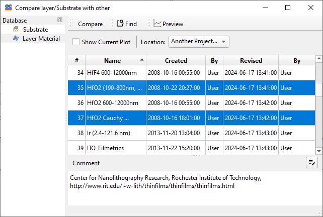

Compare Index Plots
Compare layers with other Layer Materials or Substrates dialog allows to select a set of dispersive index data for comparison.

The Include Model checkbox adds the current model to the plotted data.
The Location selector allows you to choose a file location in the current Problem directory, any other Problem directory, or in the Catalog.
The Compare button invokes the compare function and places the refractive indices of selected Layer Materials into the Layer Plots window.